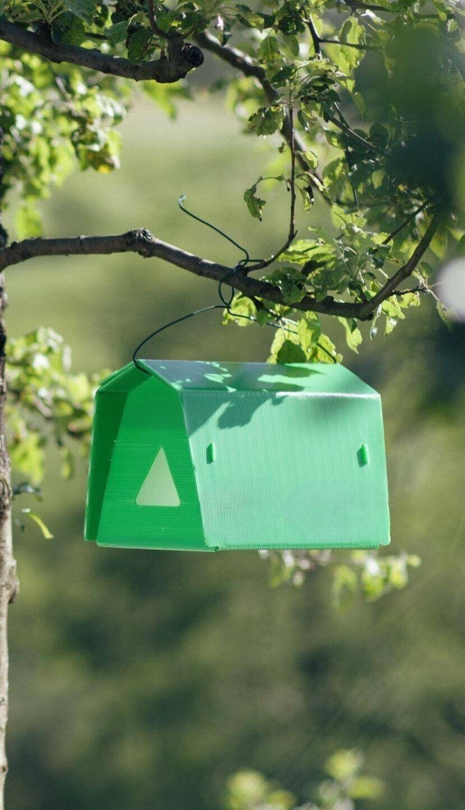
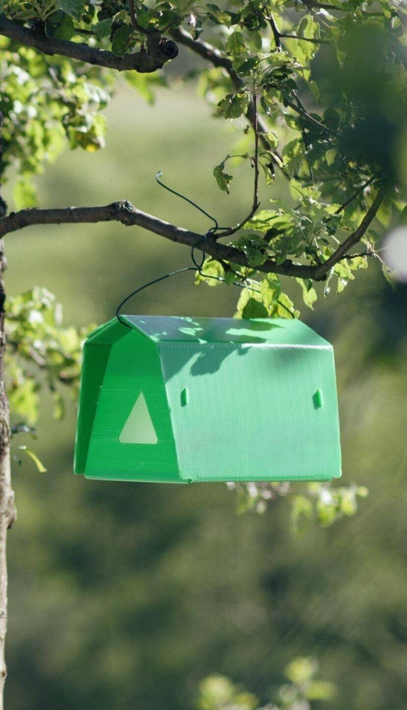

Умные агрометеостанции
Наша агрометеостанция будет непрерывно следить за вашим садом и собирать все необходимые метеоданные. В то же время она предоставляет вам полезную информацию о прогнозе погоды и развитии распространенных болезней и вредителей растений.
Подробнее 

Умные феромонные ловушки
Наши феромонные ловушки могут обнаружить вредителей с помощью искусственного интеллекта и немедленно сообщить вам об этом. Также они говорят о вероятности распространения вредителей на вашей территории и дают полезные советы по борьбе с ними.
Подробнее

Умный мониторинг воздуха
Технология контроля качества окружающей среды и измерения уровня вредных веществ в воздухе является важной частью экологического мониторинга. Эти технологии позволяют в режиме реального времени измерять химические вещества, частицы пыли, газы и другие вредные элементы в воздухе с помощью различных сенсоров и датчиков.
Подробнее
Умное управление теплицей
Платформа для мониторинга климатических параметров в теплицах и сбора данных - это инновационное решение, разработанное на основе современных технологий. Эта платформа позволяет отслеживать и анализировать различные климатические параметры в теплицах, включая температуру, влажность, освещенность и уровни углекислоты.
ПодробнееИЗМЕНЕНИЕ КЛИМАТА
Отсутствие метеорологической информации в оцифрованном виде
ЗАСОЛЕНИЕ ПОЧВЫ
Невозможность непрерывного наблюдения за состоянием почвы
БОЛЕЗНИ И ВРЕДИТЕЛИ
Задержка мер по борьбе с болезнями и вредителями
СНИЖЕНИЕ УРОЖАЙНОСТИ
Убытки от неправильного управления имеющимися ресурсами
КАРАНТИННЫЕ ТРЕБОВАНИЯ ПРИ ЭКСПОРТЕ
Сложность создания экологически чистой продукции, свободной от пестицидов
Непрерывные и цифровизированные метеорологические наблюдения
Возможность непрерывного мониторинга окружающей среды
Высокоточные агрометеорологические прогнозы
Недельное прогнозирование более 10 агрометеорологических показателей
Моделирование риска развития заболевания
Оптимизация применения пестицидов и производство экспортоориентированной продукции

ФЕРОМОННАЯ ЛОВУШКА JAYHUN TRAP
Феромонные ловушки используются в сельском хозяйстве для борьбы с вредителями. Он привлекает насекомых с помощью феромонов, которые позволяют фермерам отслеживать численность вредителей и защищать урожай, используя меньше пестицидов.
Подробнее

СИСТЕМА МОНИТОРИНГА ВОЗДУХА Oxus Airsense
Система мониторинга воздуха предназначена для повышения качества окружающей среды и защиты здоровья человека. AirSense помогает пользователям принимать правильные решения в обеспечении здоровых и безопасных условий, выявляя наличие вредных веществ.
Подробнее

ЖАСУРБЕК ХОДЖАЕВ
ОСНОВАТЕЛЬ
- профессор Университета 'Инха'
- PhD in ICT Engineering, Youngnam University, South Korea
- Имеет более 15 лет опыта в области научных исследований и разработок в Южной Корее, Ирландии, США и Китае
АЗИЗБЕК МАРАХИМОВ
ОСНОВАТЕЛЬ
- профессор Университета 'Новый Узбекистан'
- PhD in Inudstrial Management
- Имеет более 10 лет опыта в управлении совместными научными и прикладными проектами с такими странами, как Южная Корея, Германия, ОАЭ, Турция, Иордания
САРВАР АБДУЛЛАЕВ
ОСНОВАТЕЛЬ
- профессор Университета 'Инха'
- PhD in Computer Science, King’s College London, UK
- Обладает более чем 12-летним опытом научных исследований и разработок в Южной Корее, Великобритании, США и Индии
НА ФЕРМАХ ТАШКЕНТСКОЙ ОБЛАСТИ НАЧАЛИ ВНЕДРЯТЬ «ИНТЕРНЕТ ВЕЩЕЙ»
Spot.uzUNDP PROMOTES MODERN ECO-FRIENDLY TECHNIQUES OF PEST AND DISEASES MANAGEMENT | UNDP IN UZBEKISTAN
Undp.orgКАК ТЕХНОЛОГИИ ДЛЯ «ТОЧНОГО ЗЕМЛЕДЕЛИЯ» МЕНЯЮТ ФЕРМЕРСТВО В УЗБЕКИСТАНЕ
Spot.uzФЕРОМОННЫЕ ЛОВУШКИ ПОМОГУТ ФЕРМЕРАМ ТУРАКУРГАНА БОРОТЬСЯ С ВРЕДИТЕЛЯМИ
Gazeta.uzAmudario Research LLC Wins First Place in CGIAR Acceleration Program
Inha.uzPROFESSORS OF INHA UNIVERSITY IN TASHKENT PRESENTED SMART AGROMETEOROLOGICAL STATIONS
Inha.uz